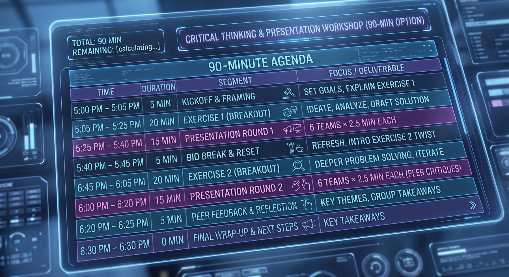

Architecture Lab 0: Agenda
This is the plan for the 90-minute workshop. There is no Canvas upload.

The schedule
| Time | Duration | Segment | Focus |
|---|---|---|---|
| 5:00 p.m. – 5:05 p.m. | 5 min | Kickoff and framing | Set goals. Explain exercise 1. |
| 5:05 p.m. – 5:25 p.m. | 20 min | Exercise 1 (breakout) | Ideate, analyze, and draft a solution. |
| 5:25 p.m. – 5:40 p.m. | 15 min | Presentation round 1 | 6 teams, 2.5 minutes each. |
| 5:40 p.m. – 5:45 p.m. | 5 min | Bio break and reset | Refresh. Introduce the exercise 2 twist. |
| 5:45 p.m. – 6:05 p.m. | 20 min | Exercise 2 (breakout) | Deeper problem solving. Iterate. |
| 6:05 p.m. – 6:20 p.m. | 15 min | Presentation round 2 | 6 teams, 2.5 minutes each. Peer critiques. |
| 6:20 p.m. – 6:25 p.m. | 5 min | Peer feedback and reflection | Key themes and group takeaways. |
| 6:30 p.m. | 0 min | Final wrap-up and next steps | Key takeaways. |
When the kickoff ends, open Architecture Lab 1: The Face.
© 2024 Bulldog Ventures Inc. All rights reserved.